Researchmaximum 1,000
One counter is shared by all three tiers. “Counter” is the value that unlocks the tier, “more” is how much further that is from the tier before it; the task text is the game's own for that threshold.
| Tier | Counter | More | Task | |
|---|---|---|---|---|
| Bronze | 50 | 50 | Hit a machine with a Radioactive Ammo 50 times. | |
| Silver | 200 | 150 | Hit a machine with a Radioactive Ammo 200 times. | |
| Gold | 1,000 | 800 | Hit a machine with a Radioactive Ammo 1,000 times. |
Related
Ammo with “Radioactive” in its name. Which of these the game counts for the task is not in the data, so treat the list as a pointer, not a rule.
Weapons it fits38 of 38
The weapons Uranium Infused goes on. Only Worn, Good, Exceptional and Special weapons have a Primary slot; the badges show the qualities of each weapon that take it.
| Weapon | Qualities | Type | Pack |
|---|---|---|---|
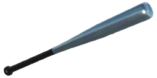 Brännboll bat | WornGoodExceptionalSpecial | Melee | Base game (melee update) |
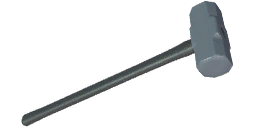 Sledgehammer | WornGoodExceptionalSpecial | Melee | Base game (melee update) |
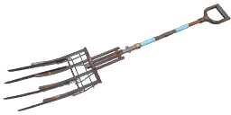 Resistance Pitchfork | WornGoodExceptionalSpecial | Melee | Resistance |
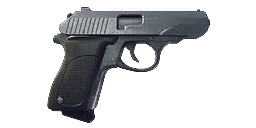 Möller PP | WornGoodExceptionalSpecial | Handguns | Base game |
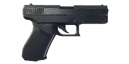 Klaucke 17 | WornGoodExceptionalSpecial | Handguns | Base game |
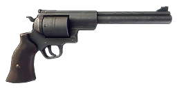 .44 Magnus | WornGoodExceptionalSpecial | Handguns | Base game |
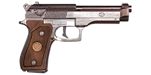 N9 Handgun | WornGoodExceptionalSpecial | Handguns | US |
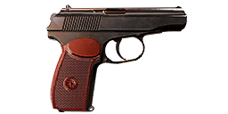 Volkov Pistol | WornGoodExceptionalSpecial | Handguns | Eastern European |
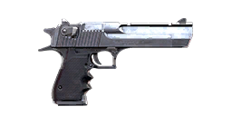 Iron Condor | WornGoodExceptionalSpecial | Handguns | Heavy |
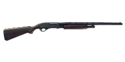 12G Pump-Action | WornGoodExceptionalSpecial | Shotguns | Base game |
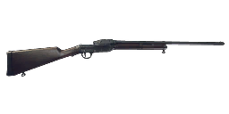 Sjöqvist Semi-Auto | WornGoodExceptionalSpecial | Shotguns | Base game |
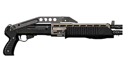 RACS-12 Semi-Auto Shotgun | WornGoodExceptionalSpecial | Shotguns | Heavy |
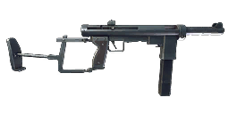 M/46 "Kpist" SMG | WornGoodExceptionalSpecial | Submachine guns | Base game |
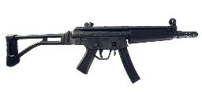 HP5 | WornGoodExceptionalSpecial | Submachine guns | Base game |
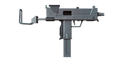 COM-10 SMG | WornGoodExceptionalSpecial | Submachine guns | US 2 |
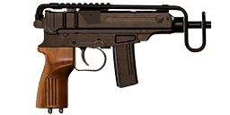 Vosa vz.68 | WornGoodExceptionalSpecial | Submachine guns | Eastern European |
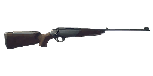 Meusser Hunting Rifle | WornGoodExceptionalSpecial | Hunting rifles | Base game |
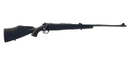 "Älgstudsare" Hunting Rifle | WornGoodExceptionalSpecial | Hunting rifles | Base game |
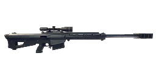 Pansarvärnsgevär 90 | WornGoodExceptionalSpecial | Sniper rifles | Base game |
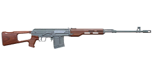 Kotenok Sniper Rifle | WornGoodExceptionalSpecial | Sniper rifles | Soviet |
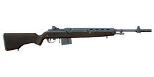 S21 | WornGoodExceptionalSpecial | Sniper rifles | US 2 |
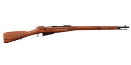 Vintovka 1891 | WornGoodExceptionalSpecial | Hunting rifles | Eastern European |
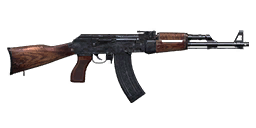 AI-76 Assault Rifle | WornGoodExceptionalSpecial | Assault rifles | Base game |
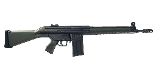 Automatgevär 4 | WornGoodExceptionalSpecial | Assault rifles | Base game |
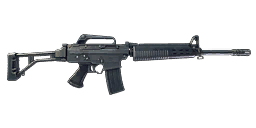 Automatgevär 5 | WornGoodExceptionalSpecial | Assault rifles | Base game |
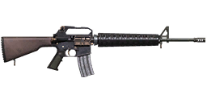 N16 Assault Rifle | WornGoodExceptionalSpecial | Assault rifles | US |
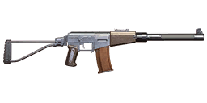 AT-WAD Assault Rifle | WornGoodExceptionalSpecial | Assault rifles | Soviet |
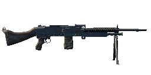 Kvm 59 Machine Gun | WornGoodExceptionalSpecial | Machine guns | Base game |
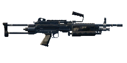 Kvm 89 Squad Automatic Weapon | WornGoodExceptionalSpecial | Machine guns | Base game |
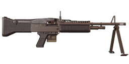 N60 Machine Gun | WornGoodExceptionalSpecial | Machine guns | US |
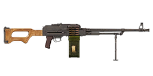 PM-71 Machine Gun | WornGoodExceptionalSpecial | Machine guns | Eastern European |
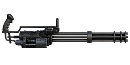 N144 Minigun | WornGoodExceptionalSpecial | Machine guns | Heavy |
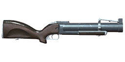 G79 Grenade Launcher | WornGoodExceptionalSpecial | Launchers | US 2 |
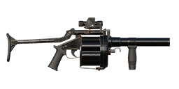 MGR-6 Grenade Launcher | WornGoodExceptionalSpecial | Launchers | Heavy |
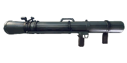 Granatgevär m/49 | WornGoodExceptionalSpecial | Launchers | Base game |
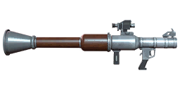 RLG-7 | WornGoodExceptionalSpecial | Launchers | Soviet |
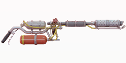 Resistance Flamethrower | WornGoodExceptionalSpecial | Bows and flamethrowers | Resistance |
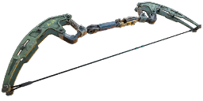 Resistance Heavy Bow | WornGoodExceptionalSpecial | Bows and flamethrowers | Resistance |